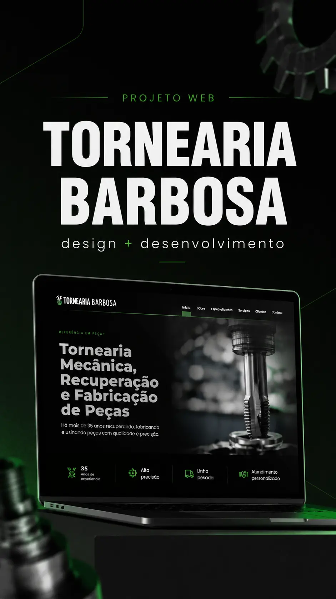

SERVIÇOS / SITES INSTITUCIONAIS
Seu negócio merece um site que apresenta, conecta e inspira confiança.
Organizamos serviços, diferenciais e informações em uma experiência digital clara, responsiva e preparada para facilitar o próximo contato.
ESTRATÉGIA + DESIGN + DESENVOLVIMENTO
01 / EXPERIÊNCIA INTERATIVA
Veja a diferença que uma presença organizada faz.
Explore um exemplo ilustrativo: do atendimento com informações espalhadas a um site que explica serviços, apresenta o negócio e facilita o contato.
Visualização: site profissional em computador.
Seu cliente precisa perguntar tudo de novo?
Quando serviços, diferenciais e contatos ficam dispersos, até encontrar uma informação simples pode exigir várias mensagens.
Essa é uma situação ilustrativa, não uma avaliação de um negócio real.
Um lugar claro para conhecer seu trabalho.
Mostre o que seu negócio faz, por que escolher você e qual é o próximo passo.
Cada serviço, uma explicação objetiva.
Organize sua oferta por necessidade, com informações que ajudam na escolha.
Apresente quem está por trás do negócio.
História, experiência e diferenciais reunidos em uma narrativa coerente.
Facilite a conversa com o cliente.
Um contato visível e contextual evita que a pessoa tenha que procurar por onde começar.

DO EXEMPLO AO PROJETO REAL
Tornearia Barbosa: serviços e contato em um endereço próprio.
Conheça um projeto real de site institucional, desenvolvido por Daysi Cunha e integrado ao portfólio DAYSLUME. A apresentação reúne serviços industriais, especialidades e informações de contato.
ESTRUTURA DIGITAL
Informação organizada, navegação clara.
Um site institucional pode reunir apresentação da empresa, serviços, projetos, conteúdos e contato em um ambiente próprio. A arquitetura é definida pelo que precisa ser comunicado e mantido ao longo do tempo.
Objetivos, materiais disponíveis, públicos e necessidades de navegação.
Definição das páginas, interface responsiva, implementação e critérios de acessibilidade.
Testes, configurações técnicas e instruções sobre manutenção conforme o contrato.
CONTATO COMERCIAL
O que o seu negócio precisa desenvolver?
Conte o contexto do seu projeto e conheça as possibilidades.